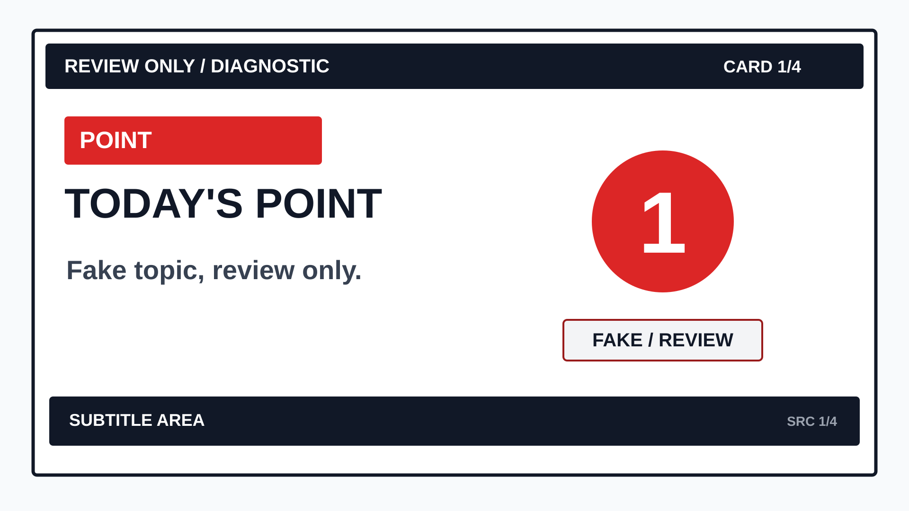
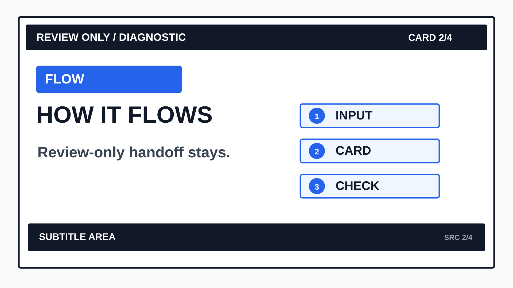
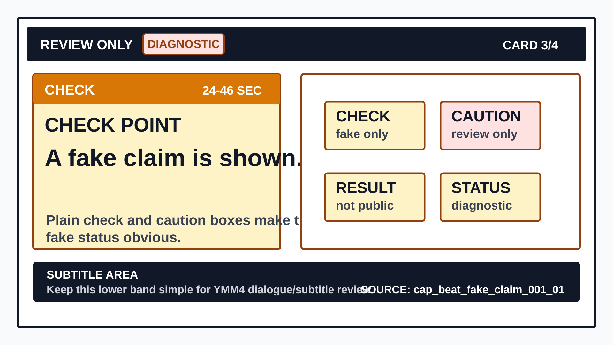
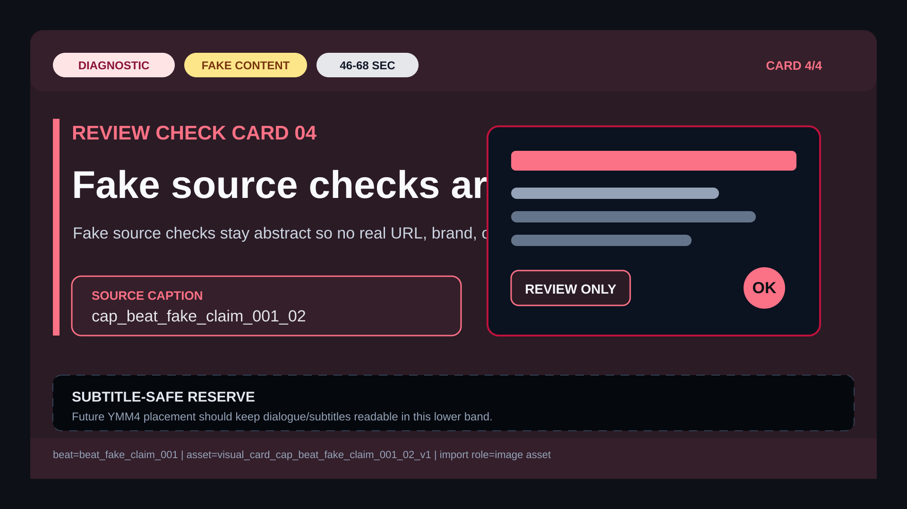

Diagnostic-only fake cards regenerated at stable paths with reduced microcopy, demoted source/debug metadata, one primary reading path, and no real brands, URLs, media, render output, audio, TTS, or production approval.



